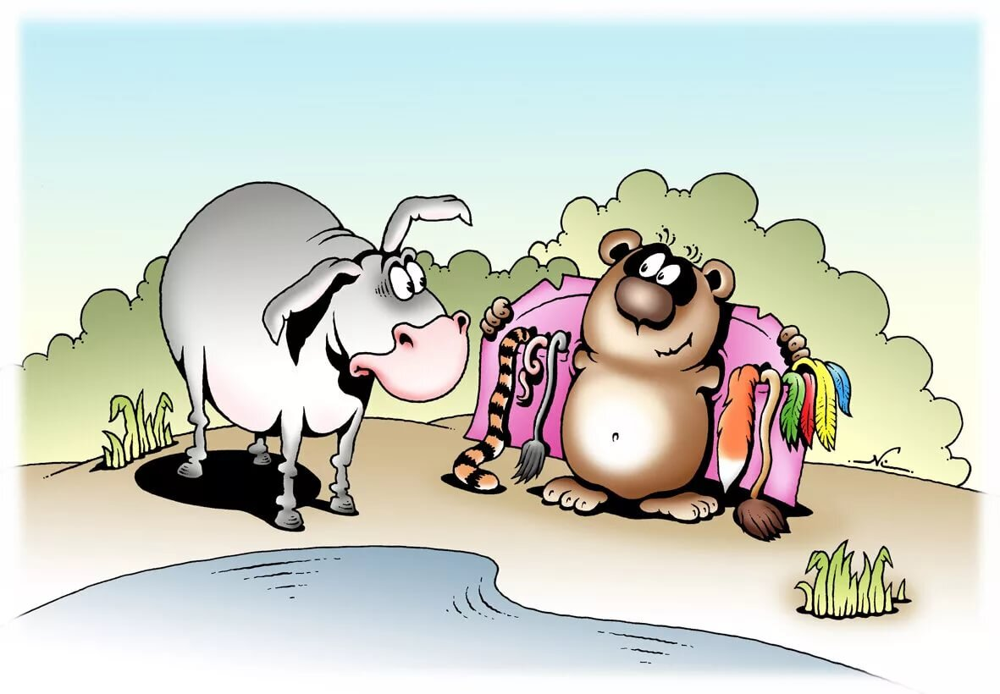

(на примере "мебельщиков")

Из книги Барайана Дюмейна "Безономика. Как AMAZON меняет мировой бизнес. Правила игры Джеффа Безоса":
«Не фокусируйтесь на конкурентах, потому что не они платят нам деньги. На любой кризис есть только один ответ — ещё сильнее сфокусироваться на своих клиентах».
Так сказал Джефф Безос на совещании сотрудников Amazon, когда самый большой книжный магазин в миреBarnes & Noble открылся в интернете. Тогда Amazonбыл ещё только книжным магазином со 125 сотрудниками и 60 миллионами долларов продаж, а у Barnes & Noble было 30 тысяч сотрудников и 3 миллиарда долларов продаж.
Как показала история, он оказался прав.
Ведь повторять шаги и свойства конкурента — это как жить чужой жизнью или питаться объедками с чужого стола. Ни удовольствия не получишь, ни наешься как следует.
Продолжим эту мысль: «Люди часто думают, что бизнес — это спорт, в которомвсегда есть победившие и проигравшие компании. Но на самом деле весь вопрос — победит ли рынок, на котором они играют, то есть насколько сильно он вырастет и будет конкурентоспособен.
Успех инфобизнесменов определен в первую очередь успехом этого рынка.
Какие рынки есть у "мебельщиков"?
Я вижу такие рынки:
(1) рынок производства
(2) рынок сырья, материалов и комплектующих для производства
(3) рынок продаж
(4) рынок услуг (консалтинговых, дизайнерских и других) Сейчас я хотел бы
деконструироватьрынок продаж, выделив на нем рынки:
(а) оффлайн розницы мебели
(б) оффлайн розницы товаров для дома
(в) интернет-магазинов
(г) лидогенерации и лидообработки
(д) маркет-плейсов
(е) ххх Успех мебельщика определялся и определяется прежде всего успехом или не успехом тех рынков, на которых он работал + трендом самого мебельного рынка.
Успех производств и мебельных салонов с нулевых по 2015-ый был обеспечен сильным ростом самого мебельного рынка и отсутствием других форматов продаж.
Успех интернет магазинов мебели был достигнут за счет того, что быстрыми темпами развивался рынок именно инет магазинов, а сейчас такая же ситуация с маркетплейсами. Последний же "душит" прежде всего предыдущего фаворита, но так же и сильно бьет по рынку оффлайн розницы товаров для дома (который сейчас пытаются развивать крупные игроки, пытаясь "заместить" Икею. Но когда была Икея - не было маркетплесов!
Производителей это тоже касается, неплохо бы им научиться управлять на каких рынках продается их товар.
Рынок маркет-плейсов побеждает, причем электронной коммерции явно побеждает, потому что я могу назвать как минимум 50 ближайших конкурентов, которые делают похожие и непохожие на нас вещи.». Но уже и рынок ххх созревает - не хочу его пока называть вслух, но есть то, что будет, по моему мнению, хорошо уживаться с маркетплейсами.
Другими словами, для развития своего мебельного бизнеса лучше выбирать выбирать такие рынки, на которые буду конкурентоспособны с другими рынками плюс в силу их размера и структуры, там может может уживаться много конкурентов.
Хороший пример такого рынка - маркетплейс, плохой - оффлайн большой розницы товаров для дома (и не ясно сможет ли он успешно конкурировать с маркетплейсами и явно на этом рынке в итоге будет мало игроков).
Если выбрать правильные рынки, то тогда ваш бизнес всегда будешь оставаться в игре. И не так важно, впереди, в середине или сзади. Потому что у находящегося в игре всегда сохраняется шанс вырваться вперёд за счёт правильно сделанного шага.
Рецепт успеха бизнеса в этом ракурсе (рынка) прост: 1) выйдите на рынок, который растёт и который выдержит много участников, 2) сконцентрируйтесь на том, чтобы дать своему клиенту лучшее из того, что можно для него сделать.
(Рецепт украден к Аркадия Морейниса :-) )
В результате размышления над этим текстом и вопросами коллег к нему, я понял, что н
еосознанно включил философскую идею "The medium is the message" («Средство есть сообщение») в свои рассуждения, трансформировав её в "Sales channel is the product" (Канал продаж и есть товар).Поясню.
Комод на вайлдбериз (на маркет-плейсе), комод в хоффе (магазин товаров для дома) и комод в мебельной центре- это с точки зрения покупателя три разные комода (хоть и артикул у всех один и тот же). Именно по этой причине товары "1 в 1" как в Икее не продаются в таких количествах, как продавались в магазинах Икеи, а некоторые и вообще не продаются.
P.S. Правильный дизайнер проектирует продукт для канала продаж, а не вообще.